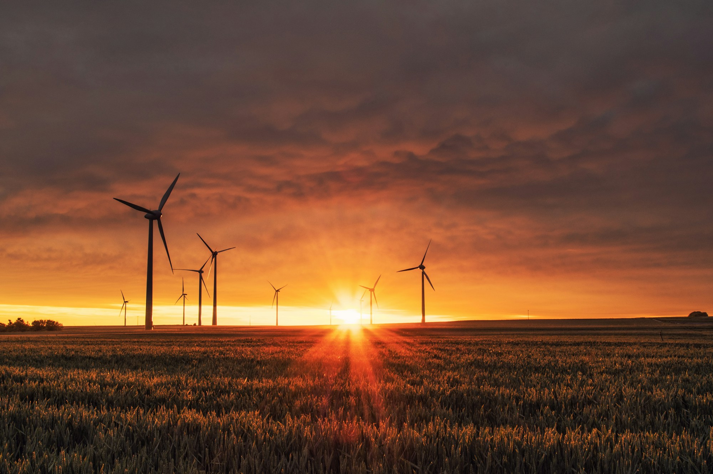
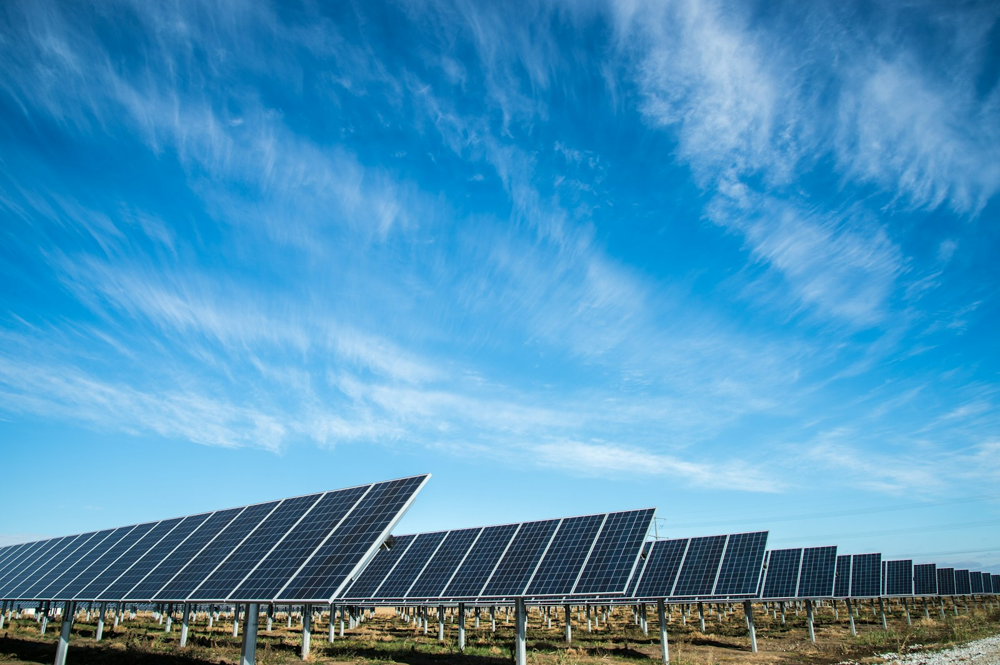
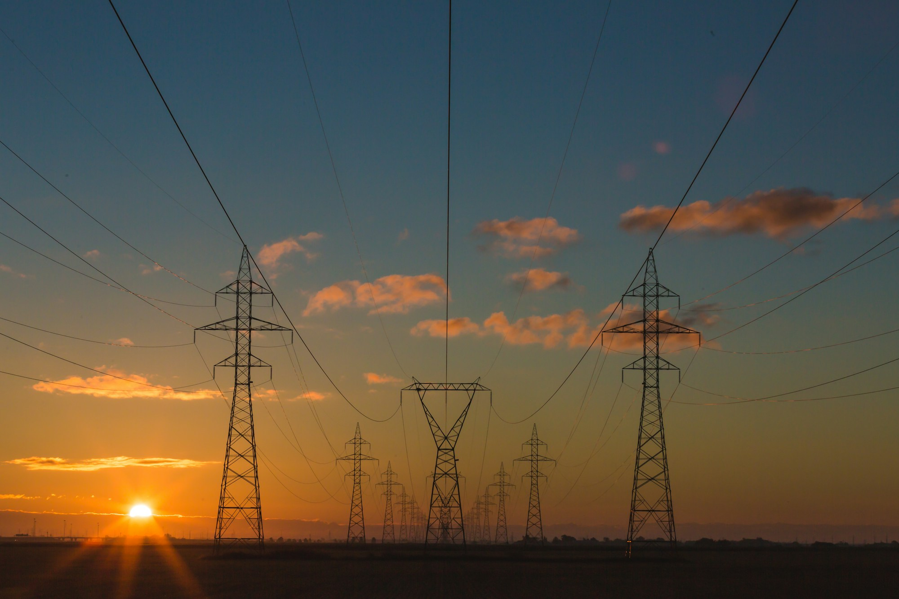
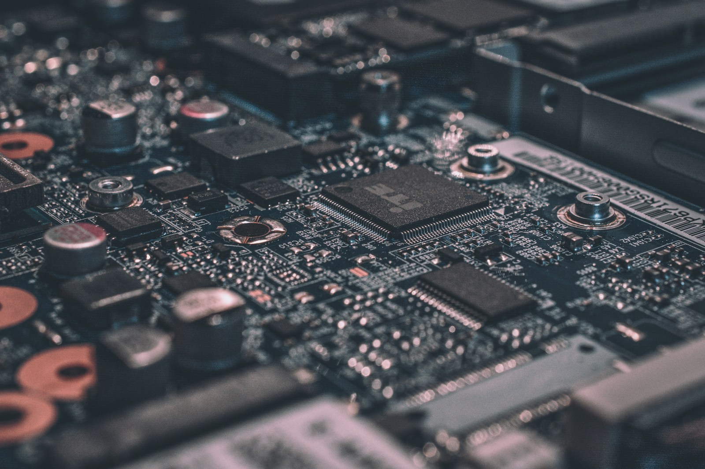

素材与科学参考
实物影像帮助我们分析工程系统，能源摄影帮助我们理解更大的应用情境。两类材料各有用途；图库照片不作为本班作品或实测结果。
新增摄影素材

Karsten Würth，Unsplash。用于课题导入与能量转化比较。

American Public Power Association，Unsplash。用于光伏路径比较。

Unsplash 图片标识 photo-1473341304170-971dccb5ac1e。用于生活计量情境与课堂收束。

Alexandre Debiève，Unsplash。仅作电路观察台的局部视觉背景，不是套件接线图。
上述摄影依据 Unsplash License 使用，网页保存了适合投屏的本地副本，避免课堂依赖第三方图片加载。没有使用 Unsplash+ 付费素材。
课程实物影像与原创示意
- 小车、套件书、缆车参考与原始6.8秒视频来自现有课程材料；保留真实外观，不以图库照片替代工程成果。
- 电路、功能草图、水力发电路径、测试赛道和理想齿轮均为教学示意，图中比例和运动效果不代表实物测量。
- 示例记录独立于本组输入，不能作为本组实测导出。实际结果由学生测试填写。
科学参考
- EIA：Photovoltaics and electricity，核对光伏直接把光能转化为电能。
- DOE：Electric Motors Research and Development，核对电动机中的电能与机械能转化。
- EIA：Laws of energy，核对能量守恒和转化损耗的表述。
字体与页面材质
标题与数字参考课程样例中的粗体无衬线风格，优先采用微软雅黑 UI、微软雅黑、苹方和系统无衬线字体。字体随设备系统提供，无需另外联网加载。暖纸纹理与制图线由网页矢量和样式绘制。
素材整理：2026年11月9日。本页保留出处，供课程作业评阅与引用核查。